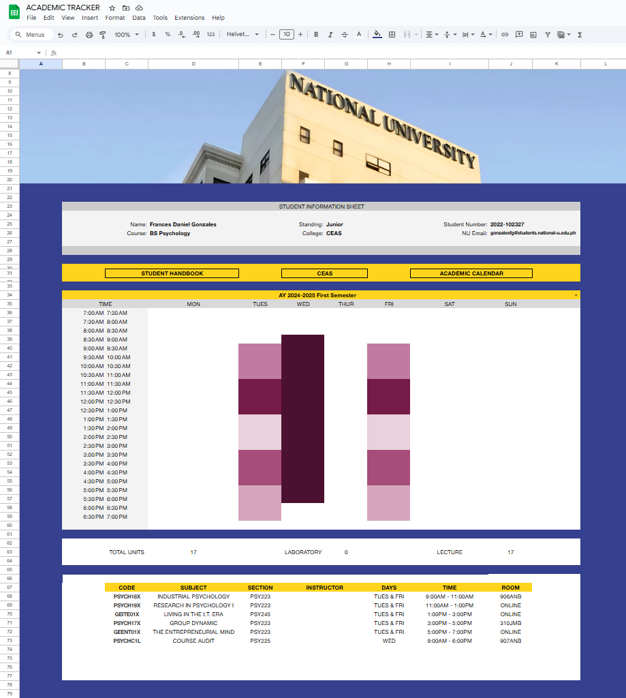
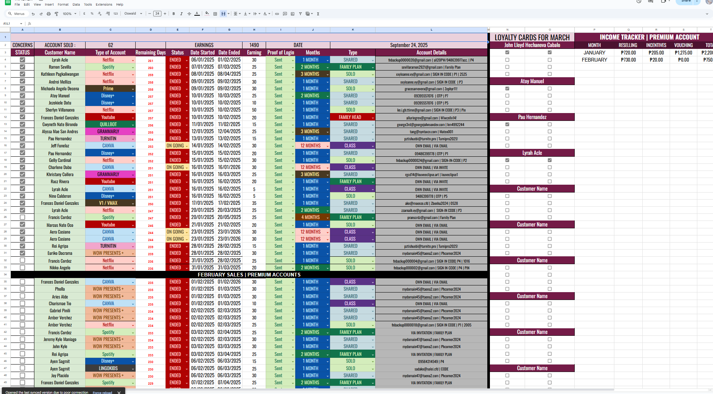
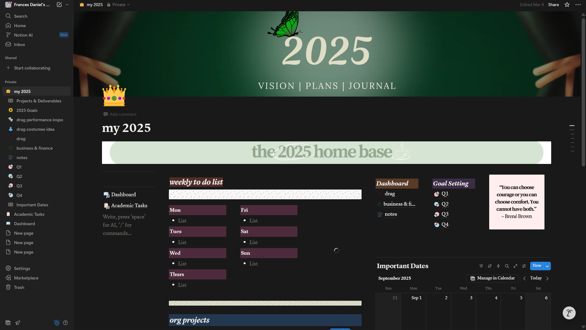
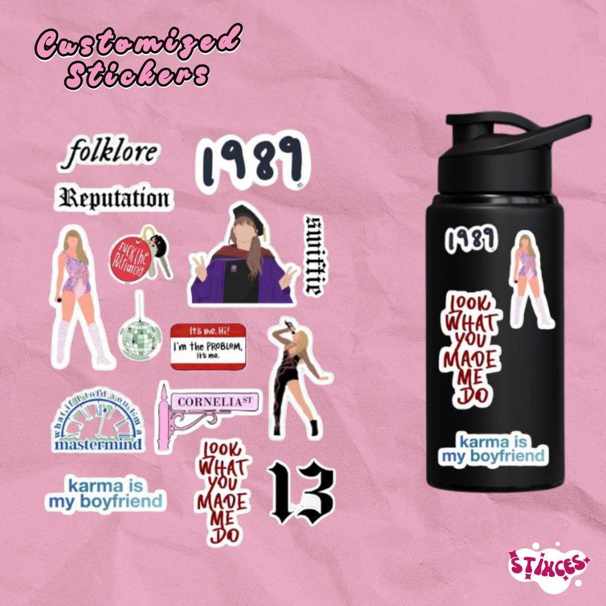
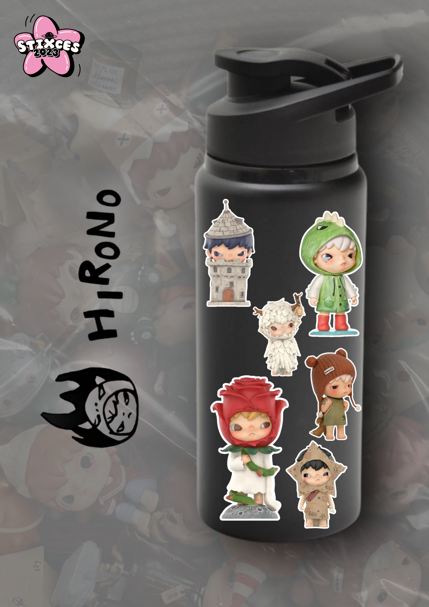
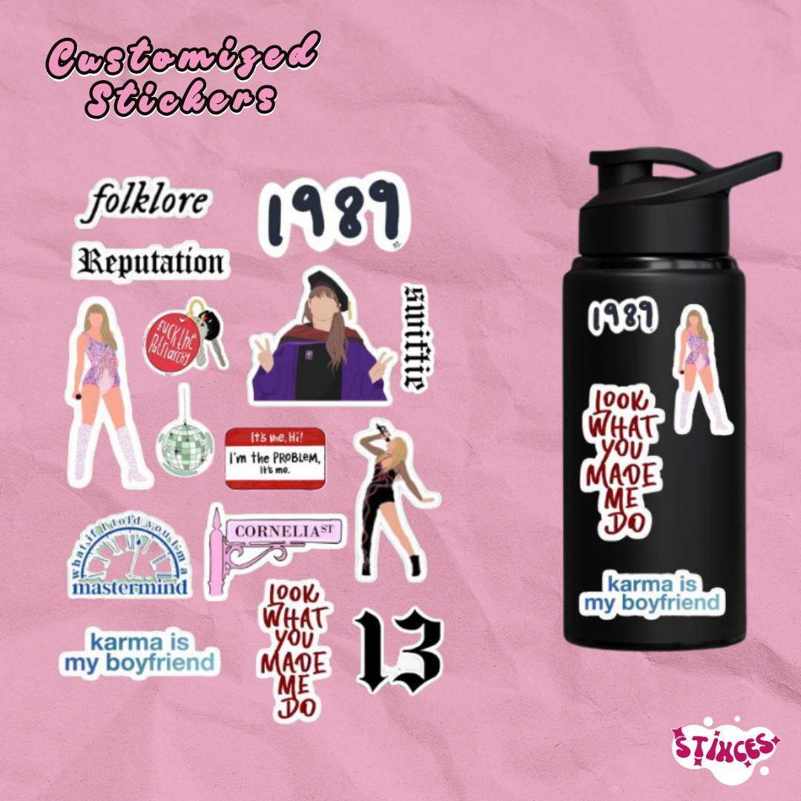
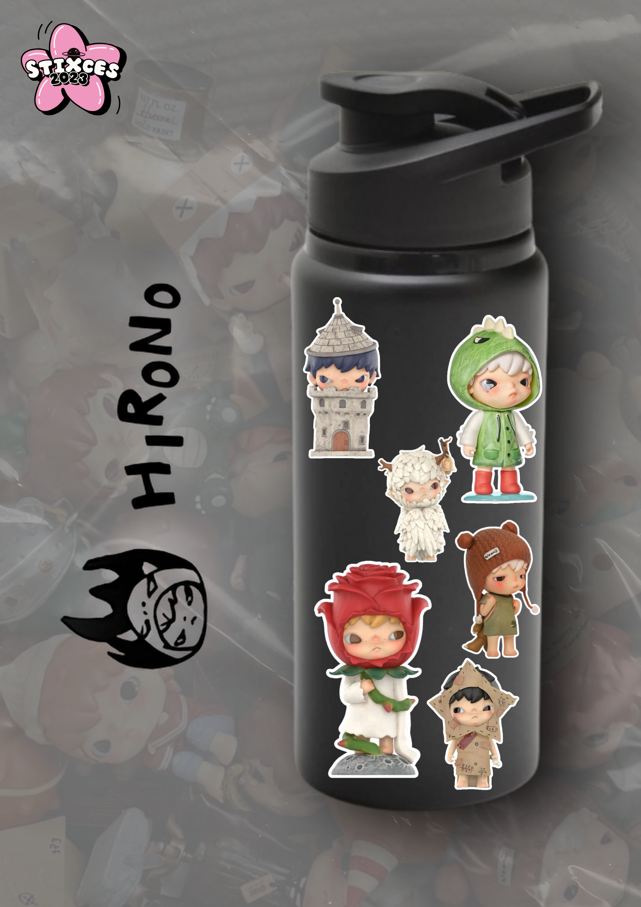

My Projects



As a Virtual Assistant, I rely on tools that help me stay organized, creative, and efficient. Each one supports my goal of making daily operations smoother and stress-free—for myself and the teams I work with.
Email: gfrancesdaniel@gmail.com Contact Number: 09651373385
Digital Editing
 



Tracking System
Documentation System
Tools I Use
I use Canva to create visually compelling content that blends professionalism with personality. From social media graphics to documentation headers and tracker covers, I design with clarity, warmth, and brand alignment in mind.
I build intuitive tracking systems using Google Sheets and Excel, designed to streamline workflows and reduce stress. Whether it's survey data, onboarding progress, or task coordination, my trackers are formatted for instant clarity and copy-paste readiness.
Notion is my go-to for organizing documentation that’s both functional and inviting. I create collaborative spaces for practicum coordination, HR onboarding, and reflection logs—balancing structure with adaptability.
Contact